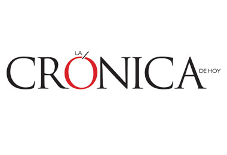
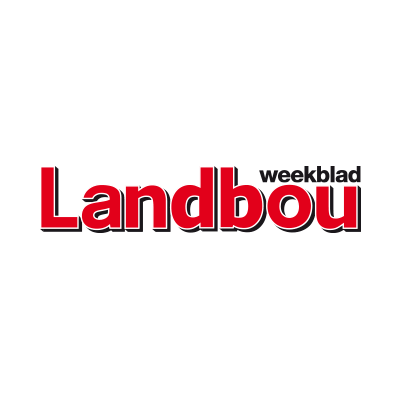
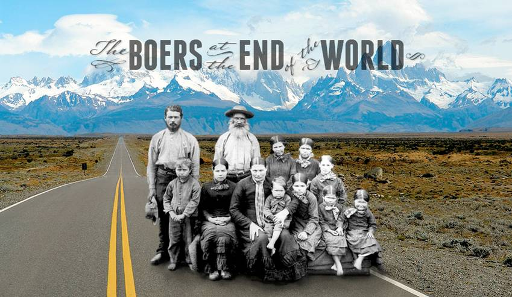

|  | Crónica"Linguist Lorenzo García-Amaya was quoted: 'We have come to study the situation of bilingualism that exists between Afrikaans and Spanish here in Patagonia, and also to study how Afrikaans has evolved over the past hundred years...'" |
El Patagónico"Visitors are interested in Afrikaans history and language, which is still preserved as the mother tongue among the South African descendants of the city and neighboring towns. These teachers carry out an investigation of this language and the phonetics..." |
|  | Landbou Weekblad"Only about 40 of the descendants can still talk pretty or a little Afrikaans, but it's as if an invisible band exists at the birthplace of their late parents, and they referred to as 'Africa'..." |
LitNet"I think the key difference is that Afrikaans in South Africa has been part of a constantly evolving culture over the decades and is integral to a modern, thriving community..." |
|  | Boers Film"In a remote stretch of Patagonia, Argentina, there is a family – the Dickasons – who speak a language from a country 7,000km to the east. They are part of a 114-year-old Afrikaans Boer community..." |
Michigan Daily"Overseen by the provost and the Institute for the Humanities, the Michigan Humanities Collaboratory serves as a resource for research in the humanities. It promotes team-based work, as well as communication of research and humanities scholars..." |
Crónica"Linguist Lorenzo Garcia Amaya said: "We have come to study the situation of bilingualism that exists between Afrikaans and Castilian here in Patagonia, and also to study how Afrikaans has evolved over the past hundred years..." |
El Patagónico"Visitors are interested in Afrikaans history and language, which is still preserved as the mother tongue among the South African descendants of the city and neighboring towns. These teachers carry out an investigation of this language and the phonetics..." |
Landbou Weekblad"Only about 40 of the descendants can still talk pretty or a little Afrikaans, but it's as if an invisible band exists at the birthplace of their late parents, and they referred to as 'Africa'..." |
LitNet"I think the key difference is that Afrikaans in South Africa has been part of a constantly evolving culture over the decades and is integral to a modern, thriving community..." |
Boers Film"In a remote stretch of Patagonia, Argentina, there is a family – the Dickasons – who speak a language from a country 7,000km to the east. They are part of a 114-year-old Afrikaans Boer community..." |
Michigan Daily"Overseen by the provost and the Institute for the Humanities, the Michigan Humanities Collaboratory serves as a resource for research in the humanities..." |